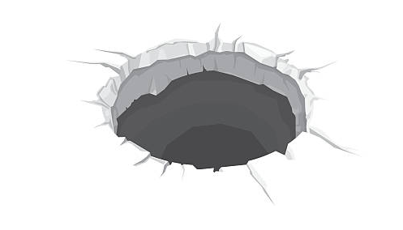

<table border = "1">
	<tr>
		<td align="center" style="text-align:left;">
			<br/>
			<b>Developers</b><br/>
			Daniel Yan<br/>
			Kyle Lotterer<br/>
		</td>
	<td>
		<p><b><u>Sinkhole</u></b></p><br/>
		<p> 
			<b>Sinkhole</b> is a VR application which allows the user to use a HTC VIVE to simulate a massive growing sinkhole. Play around with consuming larger objects then going on to larger objects. Start off small with something like boxes, then go onto consume massively sized objects like entire buildings. <b>Sinkhole</b> has realistic physics of the objects sinking and dynamic growth for the sinkhole based on object type. 
		</p> <br/>
		<a href="SinkholeProposal.pptx">Project proposal</a><br/>
		
		
		
		<h4> Video demo: </h4>
		<video width="480" height="320" controls="controls">
			<source src="SinkholeDemo.mp4" type="video/mp4">
		</video>
		<h4> Credit to Unity Asset Store Contributors for all realistic model meshes in the scene.</h4>
		</td>
	</tr>
</table>

